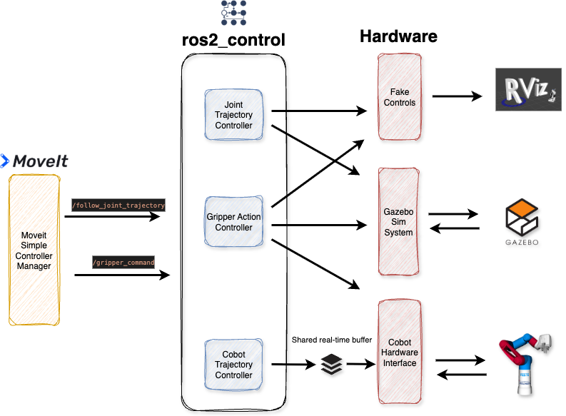

MoveIt2 and ROS2 Control Configuration¶
We plan trajectories and gripper actions with MoveIt2 and execute them using ROS2 control.
MoveIt2 and ROS2 control contain several configuration files. These are located in the cobot_moveit_config directory. We will focus on the following files:
moveit_controllers.yaml / moveit_custom_controllers.yaml
ros2_controllers.yaml
kinematics.yaml
ompl_planning.yaml
festo_cobot_model.sdf
MoveIt Controller¶
Files moveit_controllers.yaml as well as moveit_custom_controllers.yaml.
- Defines which controller manager is used. By default the
moveit_simple_controller_manager/MoveItSimpleControllerManageris selected. - Lists all ROS2 controllers that will communicate with MoveIt2 and their corresponding joints
We are using the default MoveItSimpleControllerManager for our configuration. For an example of a custom MoveIt Controller Manager (that is not active in our project and serves only for reference purposes) refer Cobot Controller Manager.
For the controllers we define the arm_group_controller of type FollowJointTrajectory and gripper_group_controller as well as vacuum_upper_joint_controller / vacuum_lower_joint_controller of type GripperCommand.
Since we have a custom controller for the real Cobot, we reference the cobot_arm_group_controller in the moveit_custom_controllers.yaml.
ROS2 Controllers: ros2_controllers.yaml¶
Defines the update_rate (execution frequency of the controllers) and each controller type in detail. In our configuration we have the following controllers
arm_group_controller:
type: joint_trajectory_controller/JointTrajectoryController
cobot_arm_group_controller:
type: cobot_trajectory_controller/CobotTrajectoryController
gripper_group_controller:
type: position_controllers/GripperActionController
vacuum_upper_joint_controller:
type: position_controllers/GripperActionController
vacuum_lower_joint_controller:
type: position_controllers/GripperActionController
joint_state_broadcaster:
type: joint_state_broadcaster/JointStateBroadcaster
While arm_group_controller us used for fake controls and gazebo, cobot_arm_group_controller is used for real Cobot control.
A simplified graphical interpretation of the configuration is provided in the following. 
Inverse Kinematics Solver: kinematics.yaml¶
Defines the plugin for Inverse Kinematics (IK). We have selected the default plugin but reduced the timeout and added solve_type: Speed in order to speed up IK.
Note often TRAC_IK is mentioned as a more "performant" IK solver. In our setup this did not seem to apply. In order to use it install trac-ik, run
sudo apt-get install ros-jazzy-trac-ik
and set the kinematics_solver in kinematics.yaml to
kinematics_solver: trac_ik_kinematics_plugin/TRAC_IKKinematicsPlugin
Robot Semantics: festo_cobot_model.srdf¶
Defines additional attributes to the URDF model (located in cobot_model/urdf) such as the end effector and joint groups and enables deactivating collisions between joints.